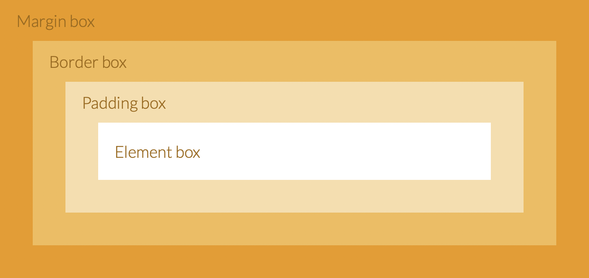

A margin is the space outside something and Padding is the space inside something.
Margins, padding and borders are all part of the Box Model. The Box Model works like this: in the middle you have the content area, surrounding that you have the padding, surrounding that you have the border and surrounding that you have the margin. It can be visually represented like this:
